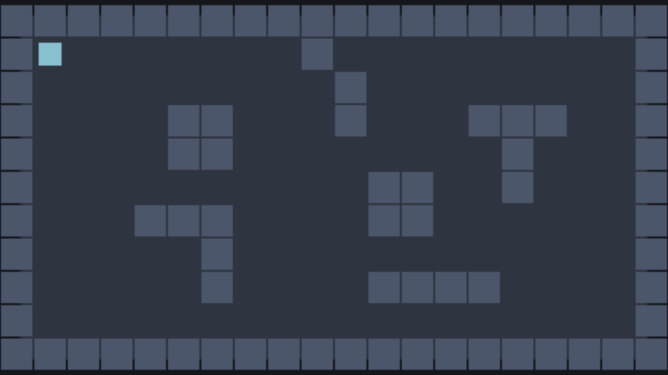
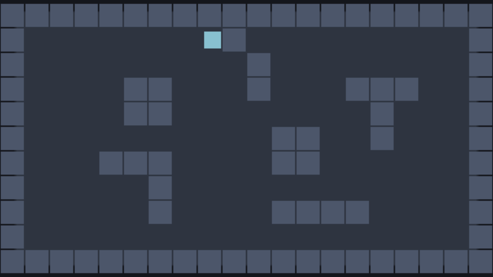

50 · Dungeon 2: Walls
Part 2 of the Unity-style dungeon series. It continues from part 1, a hero that moves. Allow 30 minutes.
What you will build: a room with walls and obstacles that the hero cannot walk through, drawn from a text map you can edit like a drawing.

Download: Part 2 project, also in examples/series-dungeon/part2.
1 Describe the level as data#
You could drag two hundred wall sprites into the scene; then you would drag them again for every change. Instead, make the level text. Create scripts/map.js:
File: scripts/map.js (new file, the whole file)
export const MAP = [
'####################',
'#P.......#.........#',
'#.........#........#',
'#....##...#...###..#',
'#....##........#...#',
'#..........##..#...#',
'#...###....##......#',
'#.....#............#',
'#.....#....####....#',
'#..................#',
'####################',
];# is a wall, . is floor and P is the hero's start. Twenty columns × eleven rows of 32-pixel tiles = 640 × 352 pixels. A script reads it and creates the objects, the way Unity developers use a tilemap or a level-loader script.
2 Prefabs#
A prefab is a saved entity you create copies of. Make two:
Wall. In the editor:
- Hierarchy ▸ + Create ▸ Sprite, rename it
Wall. Sprite size32, 32, tint#4c566a. Add the tagsolidin Inspector ▸ Tags. - Inspector ▸ + Add component ▸ rigidbody, mode
static. - Inspector ▸ + Add component ▸ collider, shape
box, size32, 32. - In the Hierarchy right-click
Wall▸ Create prefab. The fileprefabs/wall.prefab.jsonappears in the Assets panel. Delete theWallobject from the scene (the prefab stays).
In the file prefabs/wall.prefab.json (check it in a text editor):
{ "format": 1, "root": { "name": "Wall", "tags": ["solid"],
"transform": { "pos": [0, 0, 1], "rot": [0, 0, 0], "scale": [1, 1, 1] },
"components": [
{ "type": "sprite", "texture": "assets/sprites/square.png", "size": [32, 32], "tint": "#4c566a", "alpha": 1 },
{ "type": "rigidbody", "mode": "static" },
{ "type": "collider", "shape": "box", "size": [32, 32] } ],
"scripts": [] } }The order of components matters later: index 0 is the sprite, 1 the rigidbody, 2 the collider (the overrides in the Level script use these numbers).
Floor. The same way: a sprite named Floor, tint #2e3440, size 640, 352, made into the prefab prefabs/floor.prefab.json.
The square texture is plain white: tint and size turn it into anything, which is how you prototype a whole game without art.
Static vs dynamic. A static rigidbody takes part in collisions but never moves (a wall). A dynamic one is moved by physics (our hero). In Unity:
Rigidbody2Dwith Body Type Static / Dynamic.
3 The Level script#
Create an empty entity Level with scripts/level.js:
File: scripts/level.js (new file, the whole file; attach it to the Level object)
import { MonoBehaviour, SerializeField, Instantiate } from 'nord';
import { MAP } from './map.js';
export default class Level extends MonoBehaviour {
static attributes = SerializeField({ tile: 32 });
async Start() {
const t = this.tile;
const width = MAP[0].length * t, height = MAP.length * t;
await Instantiate('prefabs/floor.prefab.json', {
pos: [width / 2, height / 2, -5],
overrides: { components: { 0: { size: [width, height] } } }, // a prefab can be overridden per instance
});
for (let row = 0; row < MAP.length; row++) {
for (let col = 0; col < MAP[row].length; col++) {
const x = col * t + t / 2, y = row * t + t / 2; // the centre of the tile
if (MAP[row][col] === '#') await Instantiate('prefabs/wall.prefab.json', { pos: [x, y, 1] });
else if (MAP[row][col] === 'P') this.Find('Hero').pos = [x, y, 2];
}
}
}
}In the editor: select the Level object, then Inspector ▸ + Add script ▸ scripts/level.js. If the object does not exist yet, create it first with Hierarchy ▸ + Create ▸ Empty and rename it. The scene or prefab file then lists the script under "scripts".
Instantiate(path, { pos, overrides })isInstantiate(prefab, position, rotation). It returns a Promise (loading a prefab can touch the network), so weawaitit.- Overrides change fields of one instance:
components: { 0: { size: [w, h] } }means "component 0 (the sprite) gets this size". The prefab file is not touched. In Unity that is a prefab instance override. - An entity's position is its centre. The centre of the tile in column
col, rowrowiscol * t + t / 2. Forgetting thet / 2shifts the level half a tile. this.Find('Hero')isGameObject.Find("Hero"). We move the hero to theP.async Start()is fine: Nord runs it and carries on.
Delete the
Floorentity from part 1: the Level now creates its own.
4 A body for the hero#
Walls only stop things that have a collider and a rigidbody. Select Hero in the Hierarchy and in the Inspector:
- + Add component ▸ rigidbody, mode
dynamic. - + Add component ▸ collider, shape
box, size24, 24.
In the file scenes/main.scene.json, the Hero entity now has these components (the sprite from part 1 plus the two new ones):
{ "type": "sprite", "texture": "assets/sprites/square.png", "size": [24, 24], "tint": "#88c0d0", "alpha": 1 },
{ "type": "rigidbody", "mode": "dynamic" },
{ "type": "collider", "shape": "box", "size": [24, 24] }Writing position directly would teleport the hero through the walls, because it ignores physics. We set the velocity, exactly as in Unity (rb.velocity = …), and let the physics engine resolve collisions:
File: scripts/hero.js (replace the whole file from part 1)
import { MonoBehaviour, SerializeField, UnityInput as Input, Vector2 } from 'nord';
export default class Hero extends MonoBehaviour {
static attributes = SerializeField({ speed: 160 });
FixedUpdate() {
const move = Vector2.ClampMagnitude(new Vector2(Input.GetAxis('Horizontal'), Input.GetAxis('Vertical')), 1);
this.velocity = new Vector2(move.x, -move.y).Mul(this.speed); // rb.velocity = ...: the physics engine moves us and stops us at walls
}
}FixedUpdateruns 60 times per second, the physics step. A velocity is already "pixels per second": noTime.deltaTime.this.velocity = new Vector2(…)isrb.velocity. The y is negated because the screen's y points down.- The project has no gravity, so a body with velocity 0 stays where it is.
Press Play and walk into a wall: the hero stops, and slides along it if you keep pushing diagonally (physics removes the part of the motion that points into the wall).

5 Check yourself#
- There is no way out of the room.
- Edit
map.js, add a#, press Play: a new wall. Level design is typing. - Count the objects in the Hierarchy while playing: one per
#. A big level would create hundreds of colliders, which is why part 3 merges them.
If the hero walks through walls, it lacks the rigidbody or the collider.
What you learned#
- Describe levels as data; build them with
Instantiateand prefabs. - Overrides customise one instance.
- Static rigidbody + collider = wall; dynamic = something that bumps into it.
- Move physics bodies by
velocityinFixedUpdate, not byposition.